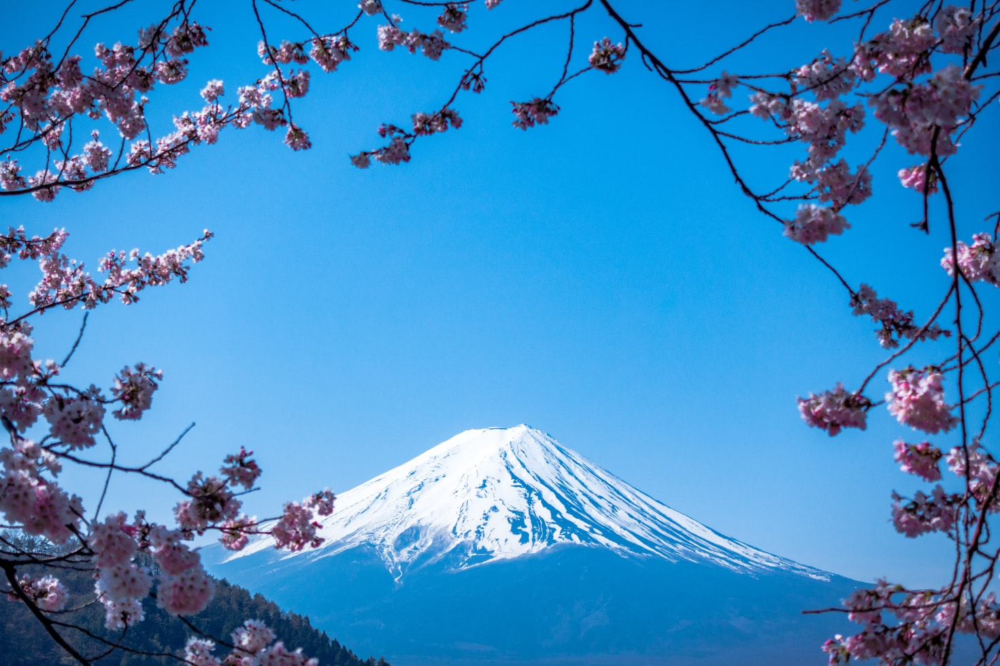

Japan
일본국(日本国), 약칭 일본(日本)은 동아시아의 일본 열도와 오세아니아의 북부 일대에 위치한 국가이다. 일본 열도는 혼슈, 규슈, 시코쿠, 홋카이도 등 주요 4개 섬과 부속 도서로 이루어져 있다. 국호인 일본국은 1945년 포츠담 선언에 서명한 이후 1947년에 시행된 일본국 헌법에 의해 성립되었다.
일본은 정치적으로는 양원제 의원내각제인 입헌군주제를 채택하고 있다. 이에 일본국 헌법 제1조에 따라 '일본국의 상징'이자 동시에 '일본 국민 통합의 상징'인 천황이 국가원수의 직무를 맡으며, 국민의 직접 선거를 통해 선출되어 참의원(상원), 중의원(하원)으로 구성되는 일본 국회가 병존한다. 정부의 수반은 국회의원 가운데에서 선출되는 내각총리대신이 맡으며, 일본의 총리는 국가행정의 책임자로서 내각부를 구성하고 중앙성청을 지휘한다. 현재의 천황은 나루히토, 국회의 집권여당은 자유민주당이며 내각총리대신은 기시다 후미오이다.
일본은 대표적인 선진국이자 강대국 중 하나이다. 일본 엔은 세계 무역결제통화 비중의 15~20%를 차지하며 대표적인 안전자산으로 평가받아 많은 사람들이 자산 피난처로써 선택하기도 하는 신뢰성이 높은 통화이다. 이 때문에 엔화는 미국 달러, 유로와 함께 세계 3대 통화라고 불리며, 유로화와 더불어 준기축통화로 인식된다. 또한 일본의 GDP는 미국과 중국에 이은 세계 3위, PPP 세계 4위, 금 보유고 세계 8위, 주식시장 규모 세계 3위, 대외순자산 규모 세계 1위 및 국제통화기금(IMF) 투표권 2위이다. 비서양권 국가 중 유일한 G7의 회원국이자 환태평양경제동반자협정(TPP) 주도국, 아시아개발은행(ADB) 설립국, 유네스코 예산 분담률 세계 1위, UN 분담률 세계 3위, 2020년 GFP 추산 군사력 세계 5위 등 세계적으로 커다란 영향력을 미치는 국가이다.